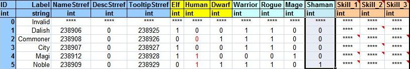
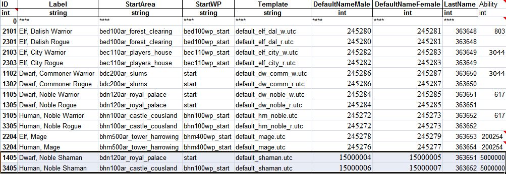

Add A New Class Tutorial
Contents
Introduction
Creating a new class in Dragon Age is a fairly complicated process, compounded by the fact that currently there are bugs in the 2DA handling which we must work around till they are fixed by Bioware.
Before going in and editing the files, make sure you know at least the following details for your class
- Class Name
- Will it be a magic- or a stamina-based character?
- Will the new class reuse existing abilities/spells or new ones?
- What backgrounds will be available for this new class?
For the purpose of the basic tutorial, we will create a new class called Shaman that will be a copy of the Mage and will be available for the Noble origins.
Create the module
Fire up the toolset and create a new module. Let's call it New_Class for this tutorial. Since we want to test this class in the single player campaign, make sure that Single Player is selected in the Extended Module drop-down under Module Properties and the Module Hierarchy includes Single Player as well.
Go to Tools -> String Editor and create the following strings: (for the purposes of this tutorial, I am using stringIDs starting at 15000000. Use whatever stringID is generated in your module)
| String ID | Text | Description |
| 15000000 | Shaman | Class Name (Singular) |
| 15000001 | Shamans | Class Name (Plural) |
| 15000002 | Shaman is a new class | Class Description |
| 15000003 | Shaman | Class Tooltip |
| 15000004 | JohnD | Default first name for male character (dwarf) |
| 15000005 | JaneD | Default first name for female character (dwarf) |
| 15000006 | JohnH | Default first name for male character (human) |
| 15000007 | JaneH | Default first name for female character (human) |
| - String editor |
Editing 2das
NOTE: DO NOT edit the .xls files present under <Dragon Age install>\tools\source\2DA directly and generate the GDA. Bioware has given us the power of M2DA precisely for this purpose.
- Create a new empty workbook or copy or rename one of the workbooks from the 2DA folder and delete the existing worksheets. Lets call this New_Class.xls
- Copy the following worksheets into the the new workbook. Rename all worksheets!!
CLA_base.xls\CLA_data -> New_Class.xls\CLA_data_nc 2da_base.xls\M2DA_base -> New_Class.xls\M2DA_base_nc background.xls\Backgrounds -> New_Class.xls\Backgrounds_nc background.xls\background_defaults -> New_Class.xls\background_defaults_nc background.xls\chargen_preload -> New_Class.xls\chargen_preload_nc ALWizard_default.xls\ALWizard_default -> New_Class.xls\ALShaman_default Achievements.xls\Achievements -> New_Class.xls\Achievements_nc
- Save the workbook New_Class.xls
Edit CLA_data_nc
In the New_Class.xls workbook, navigate to the CLA_data_nc worksheet.
NOTE: The procedure below has to be done because this 2DA is read sequentially and adding a class at the end (ID:26 using standard resources) does not generate a unique background ID. This section will be modified when Bioware fixes these bugs.
Copy line #4 (Wizard Class with ID:2) and paste it below the Rogue class, moving the subsequent lines one down. Te The important columns to change are:
- Label: Shaman
- NameStrref: 15000000 (String ID referencing the class name)
- PluralStrref: 15000001 (String ID referencing the class in plural)
- DescStrref: 15000002 (String ID referencing the class description)
- TooltipStrref: 15000003 (String ID referencing the class description)
- Icon: classico_spirithealer (You can create a new icon and put that icon's name in here too. For this tutorial, we are reusing the Spirithealer specialization icon)
- Constant: CLASS_Shaman
- StartingAbility1: ID of the ability assigned during chargen. We will keep this the same as Mage for now (4023).
- CharGenLabel: Shaman
- CLA base.xls |
Edit M2DA_base_nc
In the New_Class.xls workbook, navigate to the M2DA_base_nc worksheet.
Remove all lines except the first 2 lines.
Add the following:
| ID above 1000000 | ALShaman_default | ALShaman_default |
Edit backgrounds_nc
In the New_Class.xls workbook, navigate to the backgrounds_nc worksheet. 
Insert a new column after the Mage column and name it Shaman. Since we want to use this class for the Noble Origins, put a 1 against the Noble row. Refer the image below.
The current design of the backgrounds tab makes it difficult to assign different classes to different races for the Mage and Noble origins. Independent modules can override this backgrounds worksheet completely though they would still have to work within the current GUI limitation of 6 backgrounds.
{kind=link}
Edit background_defaults_nc
In the New_Class.xls workbook, navigate to the background_defaults_nc worksheet.
The ID column in this worksheet is populated according to the following formula:
(1000 * Race ID) + (100 * Class ID) + Background ID
Currently, this formula has also been reported to Bioware since this allows for 99 backgrounds and requires the Class ID to be in multiples of 100 to yield unique results.
In this tutorial,
- Dwarf Noble Shaman = (1000 * 1) + (100 * 4) + 5 = 1405
- Human Noble Shaman = (1000 * 3) + (100 * 4) + 5 = 3405
Change the DefaultNameMale and DefaultNameFemale stringID references to the strings created earlier. The result should look like the image below. We will create the default_shaman.utc and the Ability referenced by the ID 5000000 later in the tutorial.

{kind=link}
Edit chargen_preload_nc
In the New_Class.xls workbook, navigate to the chargen_preload_nc worksheet.
This sheet lists the character templates to load before the chargen so that the model corresponding to the race/class/origin is shown.
Copy the ID and Template for the new character templates from the background_defaults_nc worksheet.
| ID | Template |
| 1405 | default_shaman.utc |
| 3405 | default_shaman.utc |
Generate the .GDA file
Open a command prompt and navigate to the <Dragon Age install directory>\tools\ResourceBuild\Processors
Execute the following command: excelprocessor.exe New_Class.xls -outdir="<My Documents path>\Bioware\Dragon Age\AddIns\New_Class\module\override"
Editing the scripts
You now need to edit some scripts.
Edit the 2da_constants_h file
find the 2da_constants_h file under Core scripts
right click on 2DA_CONSTANTS_H, select CHECK OUT
Go down to the following sections and edit it like below:
const int ABILITY_TALENT_HIDDEN_DUELIST = 4030; const int ABILITY_TALENT_HIDDEN_RANGER = 4029; const int ABILITY_TALENT_HIDDEN_REAVER = 4019; const int ABILITY_TALENT_HIDDEN_ROGUE = 4020; const int ABILITY_TALENT_HIDDEN_SHALE = 4033; const int ABILITY_TALENT_HIDDEN_TEMPLAR = 4021; const int ABILITY_TALENT_HIDDEN_WARRIOR = 4022; const int ABILITY_TALENT_HIDDEN_SHAMAN = 5000; const int ABILITY_TALENT_HURLOCK_PROPERTIES = 90080; const int ABILITY_TALENT_INDOMITABLE = 28;
and
//Class Constants const int CLASS_WARRIOR = 1; const int CLASS_WIZARD = 2; const int CLASS_ROGUE = 3; const int CLASS_SHAMAN = 4; const int CLASS_SHAPESHIFTER = 30; const int CLASS_SPIRITHEALER = 31; const int CLASS_CHAMPION = 32; const int CLASS_TEMPLAR = 33; const int CLASS_BERSERKER = 34; const int CLASS_REAVER = 35; const int CLASS_ARCANE_WARRIOR = 36; const int CLASS_ASSASSIN = 37; const int CLASS_BLOOD_MAGE = 38; const int CLASS_BARD = 39; const int CLASS_RANGER = 40; const int CLASS_DUELIST = 41; const int CLASS_SHALE = 17; const int CLASS_DOG = 18; const int CLASS_MONSTER_ANIMAL = 19;
Please note that the constants for the specializations have been changed; this will require editing of the Achievements gda via an M2DA to correct the displayed data when unlocking specializations. You may also have to recompile one or more of the plot scripts, but I have not been able to test this personally.
Afterwards on top select SAVE then CHECK IN
Now at the top and click "EXPORT WITHOUT DEPENDENT RESOURCES"
Edit the sys_chargen_h file
Find the sys_chargen_h file under _Systems ==> _Includes
right click on sys_chargen_h, select CHECK OUT
Go down to the starting skills section and edit it like below:
// ------------------------------------------------------------------------- // Starting Skills // ------------------------------------------------------------------------- if (nClass == CLASS_WARRIOR) { _AddAbility(oChar, 100100); } else if (nClass == CLASS_ROGUE) { _AddAbility(oChar, ABILITY_SKILL_POISON_1); } else if (nClass == CLASS_WIZARD) { _AddAbility(oChar, ABILITY_SKILL_HERBALISM_1); } else if (nClass == CLASS_SHAMAN) { _AddAbility(oChar, ABILITY_SKILL_HERBALISM_1); } }
Next goto starting ability
// --------------------------------------------------------------------- // Load the starting ability for the background // --------------------------------------------------------------------- int nAbility = GetM2DAInt(TABLE_STARTING_EQUIPMENT,"Ability", nIdx); _AddAbility(oCreature, nAbility); } else { string sTemplate = "default_player.utc"; switch (nClass) { case CLASS_WARRIOR: sTemplate = "default_warrior.utc"; break; case CLASS_ROGUE: sTemplate = "default_rogue.utc"; break; case CLASS_WIZARD: sTemplate = "default_wizard.utc"; break; case CLASS_SHAMAN: sTemplate = "default_shaman.utc"; break; } LoadItemsFromTemplate(oCreature, sTemplate, TRUE); } }
Afterwards on top select SAVE then CHECK IN
Now at the top and click "EXPORT WITHOUT DEPENDENT RESOURCES"
Edit the sys_chargen file
Find the sys_chargen ==> under _Systems
right click on sys_chargen, select Duplicate; name the file something like wd_sys_chargen.
Change this line:
This value does not have to be limited to the minimum number of base classes in the file; it simply has to be higher than the default value of 3.
Go down to the following section and either comment it out as I show it, or delete it; if it is left in place without being commented out, it will cause your class to provide double the attribute points at character creation or level up.
// --------------------------------------------------------------------- // This fires whenever the player presses + or - on an attribute to spend // points on the attribute screen of character generation // // int(0) - Constant PROPERTY_* integer // int(1) - # of points spent // --------------------------------------------------------------------- /*case EVENT_TYPE_CHARGEN_ASSIGN_ATTRIBUTES: { int nAttribute = GetEventInteger(ev,0); int nPoints = GetEventInteger(ev,1); // ----------------------------------------------------------------- // Subtract from available points to spend // ----------------------------------------------------------------- Chargen_ModifyCreaturePropertyBase(oChar, PROPERTY_SIMPLE_ATTRIBUTE_POINTS, IntToFloat(nPoints*-1)); // ----------------------------------------------------------------- // Spend it. // ----------------------------------------------------------------- Chargen_SpendAttributePoints(oChar,nAttribute,nPoints,FALSE); break; }*/
Go down to the special handling section and edit it like below:
// special handling for aluvian if (nQuickStart == 0 ) { Log_Trace(LOG_CHANNEL_CHARACTER,"sys_chargen","Setting default values for player character"); int nRandClass = abs((GetLowResTimer()%3)+1); if(nRandClass == CLASS_ROGUE || nRandClass == CLASS_WARRIOR || nRandClass == CLASS_SHAMAN) { _RunChargen(RACE_HUMAN, nRandClass, oChar, BACKGROUND_NOBLE ); WR_SetPlotFlag(PLT_GEN00PT_BACKGROUNDS, GEN_BACK_HUMAN_NOBLE, TRUE); } else // mage { _RunChargen(RACE_HUMAN, nRandClass, oChar, BACKGROUND_MAGI ); WR_SetPlotFlag(PLT_GEN00PT_BACKGROUNDS, GEN_BACK_CIRCLE, TRUE); } Chargen_SetNumTactics(oChar); SetCanLevelUp(oChar,Chargen_HasPointsToSpend(oChar)); SendEventModuleChargenDone("", ""); }
next go down to the tactics sections and add the following:
// associate some tactics preset table int nPresetTable; if(GetCreatureCoreClass(oChar) == CLASS_WARRIOR) nPresetTable = 1; // tank else if(GetCreatureCoreClass(oChar) == CLASS_ROGUE) nPresetTable = 2; // damage dealer else if(GetCreatureCoreClass(oChar) == CLASS_SHAMAN) nPresetTable = 1; // damage dealer else // mage nPresetTable = 5; // nuker
Afterwards on top select SAVE then CHECK IN
Now at the top and click "EXPORT WITHOUT DEPENDENT RESOURCES"
Create the module script
Create a new script and give it a descriptive name like "loadscript". This script will intercept the Chargen events and redirect them to the custom version of the sys_chargen script you just created. It can also be used to intercept other events if you want to alter other things or add items to a newly created character's inventory. This is a good example of how to use it to add custom items and redirect the chargen to the custom script.
#include "utility_h" #include "wrappers_h" #include "events_h" void main() { event ev = GetCurrentEvent(); int nEvent = GetEventType(ev); Log_Events("", ev); switch (nEvent) { //////////////////////////////////////////////////////////////////////// // Sent by: The engine // When: The module loads from a save game, or for the first time. This event can fire more than // once for a single module or game instance. //////////////////////////////////////////////////////////////////////// case EVENT_TYPE_MODULE_LOAD: { //Nothing is needed here, unless you are doing other things with your module. } default: { // ----------------------------------------------------------------- // Handle character generation events sent by the engine. // ----------------------------------------------------------------- if ((nEvent >= EVENT_TYPE_CHARGEN_START && nEvent <= EVENT_TYPE_CHARGEN_END) || nEvent == EVENT_TYPE_PLAYERLEVELUP ) { HandleEvent(ev, R"ld_sys_chargen.ncs"); } else { Log_Trace(LOG_CHANNEL_EVENTS, GetCurrentScriptName(), Log_GetEventNameById(nEvent) + " (" + ToString(nEvent) + ") *** Unhandled event ***"); } break; } } }
Afterwards on top select SAVE then CHECK IN
Now at the top and click "EXPORT WITHOUT DEPENDENT RESOURCES"
| - Script |
Creating the UTC template file
Back in the toolset we need to do the following:
Click on the "creature tab" (red head icon)
Right click on default_player ==> duplicate Do like the following:
{kind=link}
Now we need to edit the values and give them some armor and weapons, like so:
Class: Shaman (from dropdown) Name: Default Male Shaman
{kind=link}
Now, you need to make one for each race and origin that you wish for the class to be available to (this is how Bioware does it, if you look carefully at the various entries in the backgrounds.xls worksheets); name each one with the following abbreviations for race or origin: hm_noble, hm_mage, dw_comm, dw_noble, elf_city, elf_mage, or elf_dalish (gender is handled automatically by the game, based on race). Making different versions of the template allows each version to have different armor and weapons available to them, which helps them blend into the base game (if you are using it in a module that extends Single Player). Be sure to use the proper names in each location in the backgrounds.xls worksheets or the template will not be displayed when you select the background in the game.
Now at the top and click SAVE ==> CHECK IN for each template.
Now at the top and click "EXPORT WITHOUT DEPENDENT RESOURCES" for each template.
| - Designer Resources#Creating new resources - Creature - Exporting a module |
Putting it all together
Up on top ON THE EXPORT TAB
"EXPORT WITHOUT DEPENDENT RESOURCES"
"GENERATE MODULE XML"
"GENERATE MANIFEST XML"
"EXPORT TALK TABLE"
| - Exporting a module |
Cleaning up
DON'T SKIP THIS PART
Delete all files in the name/mydocuments/bioware/dragonage/packages/core/override/toolset; these are not needed.
Trying it out
Start up your game (It may take a min) and start a new game.
- WARNING* IF ANYTHING HAS GONE WRONG HERE YOUR GAME WILL BE SEVERELY DAMAGED
Select MALE ==> HUMAN ==> SHAMAN ==> MAGI
YOU SHOULD SEE YOUR NEW CHARACTER
IF SOMETHING HAPPENED QUIT AND DOUBLE CHECK YOUR STEPS
Make sure you did not miss ANY ";" or "{ }" as a single one of these missed can destroy the game.
Troubleshooting
MY SPELLS ARE NOT SHOWING UP IN THE CREATION SCREEN, HELP!!
- You may not have sort your ability file back to ID. It has to be sorted by ID in order to show up.
- You may not have assigned the new abilities to your new class "5000" in the prereqability column
MY MODEL IS NOT SHOWING UP WHEN I GOTO MALE ==> HUMAN ==> SHAMAN ==> MAGI
- It is very likely you did not EXPORT your default_shaman.utc model
- Double check the background file to make sure you are using default_shaman.utc for the template
- Try rebooting your computer.
| Language: | English • 中文 |
|---|